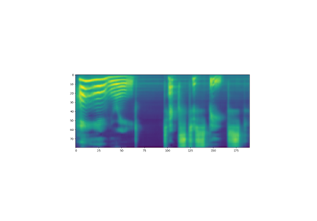

Tacotron2¶
- class torchaudio.models.Tacotron2(mask_padding: bool = False, n_mels: int = 80, n_symbol: int = 148, n_frames_per_step: int = 1, symbol_embedding_dim: int = 512, encoder_embedding_dim: int = 512, encoder_n_convolution: int = 3, encoder_kernel_size: int = 5, decoder_rnn_dim: int = 1024, decoder_max_step: int = 2000, decoder_dropout: float = 0.1, decoder_early_stopping: bool = True, attention_rnn_dim: int = 1024, attention_hidden_dim: int = 128, attention_location_n_filter: int = 32, attention_location_kernel_size: int = 31, attention_dropout: float = 0.1, prenet_dim: int = 256, postnet_n_convolution: int = 5, postnet_kernel_size: int = 5, postnet_embedding_dim: int = 512, gate_threshold: float = 0.5)[source]¶
Tacotron2 model from Natural TTS Synthesis by Conditioning WaveNet on Mel Spectrogram Predictions [Shen et al., 2018] based on the implementation from Nvidia Deep Learning Examples.
See also
torchaudio.pipelines.Tacotron2TTSBundle: TTS pipeline with pretrained model.
- Parameters
mask_padding (bool, optional) – Use mask padding (Default:
False).n_mels (int, optional) – Number of mel bins (Default:
80).n_symbol (int, optional) – Number of symbols for the input text (Default:
148).n_frames_per_step (int, optional) – Number of frames processed per step, only 1 is supported (Default:
1).symbol_embedding_dim (int, optional) – Input embedding dimension (Default:
512).encoder_n_convolution (int, optional) – Number of encoder convolutions (Default:
3).encoder_kernel_size (int, optional) – Encoder kernel size (Default:
5).encoder_embedding_dim (int, optional) – Encoder embedding dimension (Default:
512).decoder_rnn_dim (int, optional) – Number of units in decoder LSTM (Default:
1024).decoder_max_step (int, optional) – Maximum number of output mel spectrograms (Default:
2000).decoder_dropout (float, optional) – Dropout probability for decoder LSTM (Default:
0.1).decoder_early_stopping (bool, optional) – Continue decoding after all samples are finished (Default:
True).attention_rnn_dim (int, optional) – Number of units in attention LSTM (Default:
1024).attention_hidden_dim (int, optional) – Dimension of attention hidden representation (Default:
128).attention_location_n_filter (int, optional) – Number of filters for attention model (Default:
32).attention_location_kernel_size (int, optional) – Kernel size for attention model (Default:
31).attention_dropout (float, optional) – Dropout probability for attention LSTM (Default:
0.1).prenet_dim (int, optional) – Number of ReLU units in prenet layers (Default:
256).postnet_n_convolution (int, optional) – Number of postnet convolutions (Default:
5).postnet_kernel_size (int, optional) – Postnet kernel size (Default:
5).postnet_embedding_dim (int, optional) – Postnet embedding dimension (Default:
512).gate_threshold (float, optional) – Probability threshold for stop token (Default:
0.5).
- Tutorials using
Tacotron2: - Text-to-Speech with Tacotron2
forward¶
- Tacotron2.forward(tokens: Tensor, token_lengths: Tensor, mel_specgram: Tensor, mel_specgram_lengths: Tensor) Tuple[Tensor, Tensor, Tensor, Tensor][source]¶
Pass the input through the Tacotron2 model. This is in teacher forcing mode, which is generally used for training.
The input
tokensshould be padded with zeros to length max oftoken_lengths. The inputmel_specgramshould be padded with zeros to length max ofmel_specgram_lengths.- Parameters
tokens (Tensor) – The input tokens to Tacotron2 with shape (n_batch, max of token_lengths).
token_lengths (Tensor) – The valid length of each sample in
tokenswith shape (n_batch, ).mel_specgram (Tensor) – The target mel spectrogram with shape (n_batch, n_mels, max of mel_specgram_lengths).
mel_specgram_lengths (Tensor) – The length of each mel spectrogram with shape (n_batch, ).
- Returns
- Tensor
Mel spectrogram before Postnet with shape (n_batch, n_mels, max of mel_specgram_lengths).
- Tensor
Mel spectrogram after Postnet with shape (n_batch, n_mels, max of mel_specgram_lengths).
- Tensor
The output for stop token at each time step with shape (n_batch, max of mel_specgram_lengths).
- Tensor
Sequence of attention weights from the decoder with shape (n_batch, max of mel_specgram_lengths, max of token_lengths).
- Return type
[Tensor, Tensor, Tensor, Tensor]
infer¶
- Tacotron2.infer(tokens: Tensor, lengths: Optional[Tensor] = None) Tuple[Tensor, Tensor, Tensor][source]¶
Using Tacotron2 for inference. The input is a batch of encoded sentences (
tokens) and its corresponding lengths (lengths). The output is the generated mel spectrograms, its corresponding lengths, and the attention weights from the decoder.The input tokens should be padded with zeros to length max of
lengths.- Parameters
tokens (Tensor) – The input tokens to Tacotron2 with shape (n_batch, max of lengths).
lengths (Tensor or None, optional) – The valid length of each sample in
tokenswith shape (n_batch, ). IfNone, it is assumed that the all the tokens are valid. Default:None
- Returns
- Tensor
The predicted mel spectrogram with shape (n_batch, n_mels, max of mel_specgram_lengths).
- Tensor
The length of the predicted mel spectrogram with shape (n_batch, ).
- Tensor
Sequence of attention weights from the decoder with shape (n_batch, max of mel_specgram_lengths, max of lengths).
- Return type
(Tensor, Tensor, Tensor)